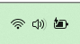
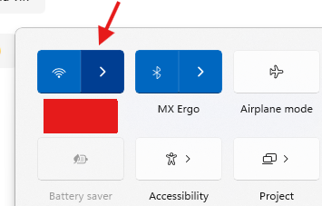
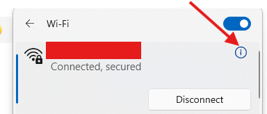
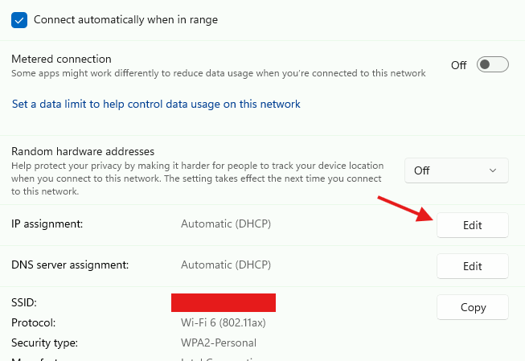
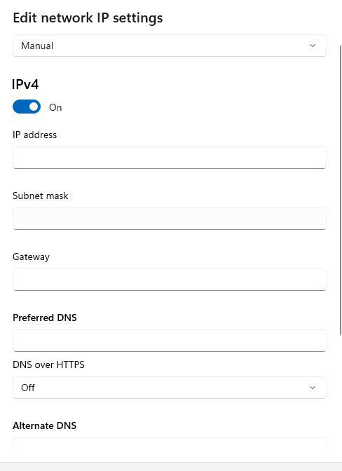
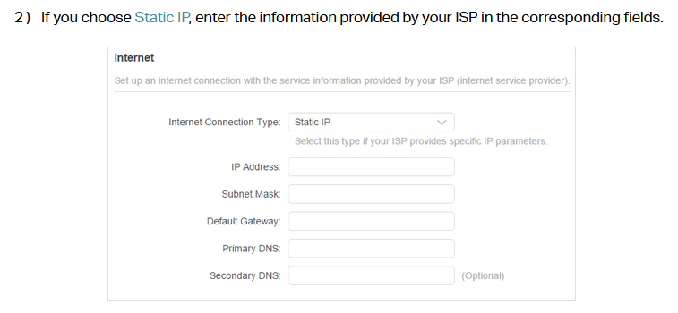
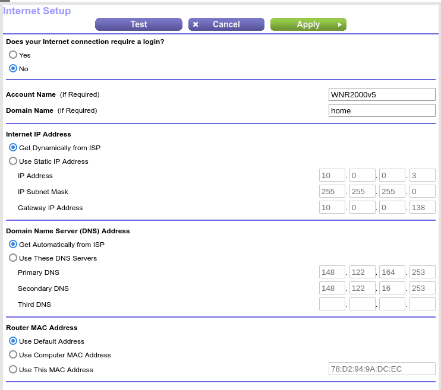

Oppsett av faste ip-adresser
De følgende ting må settes inn fra hånd når en velger faste ip-adresser:
- selve ip-adressen
- nettverksmasken som oftest er 255.255.255.0
- gateway: oftest slutter den i .1 eller .254 — all nettverkstrafikken sendes ditt
- DNS: en eller flere servere som opplyser navn til numerisk ip-adresser
For datamaskiner som er tilkoblet stikkkontakten i veggen, må innstillingene gjøres på datamaskinen.
Dersom man har en trådløs ruter og den ikke fungerer med en gang, så må det gjøres via web på selve ruteren.
Windows
Windows må konfigureres, dersom det ikke fungerer med en gang.
På oppgavelinje, trykk på:

Deretter får man opp

trykk til høyre for wifi/internet ikonen, på denne ">" symbolet.
Neste er litt skjult. Det er denne "info" ikonen, "i i en sirkel" som fører videre.

Nå er vi på internett-instillingene og kan enkelt komme til neste:

Innstillingene for fast IP-adresser settes inn her:

TP-Link ruter
TP-Link ruter kan nås via http://tplinkwifi.net og etterspør kun passordet.
Deretter må en finne frem til "internet" og så sette inn det følgende:

Netgear ruter - eksempel
My own Netgear ruter tilbyr muligheten å sette inn en egen konfigurasjon.
Først må jeg bruke en webleser til å forbinde min datamaskin med ruteren.
I veiledningen til ruteren står det hvilken adresse som kan brukes.
Noen ruter tilbyr muligheten til å bruke et eller annet navn.
Min ruter kan nås via http://192.168.0.1/, men andre tilbyr http://10.0.0.1.
De som har konfigurert sin egen trådløs ruter med eget WLAN-navn og passord vet hvordan den kan nås.
Bildet under er hentet fra "bildet", "internet":

Linux
Vanligvis har Linux-desktop et Wifi-symbol i oppgavelinjen, som gir tilgang til konfigurasjon.
Let der etter DCHP og endre det fra automatisk til manuell. Sett inn IP-adressen og Nettverksmasken.
Ellers finnes det `nmtui`, et verktøy på kommandolinje som bekvemt lar en sette inn verdiene.